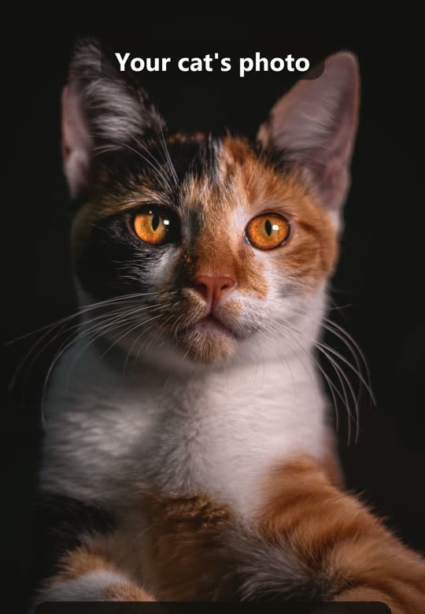
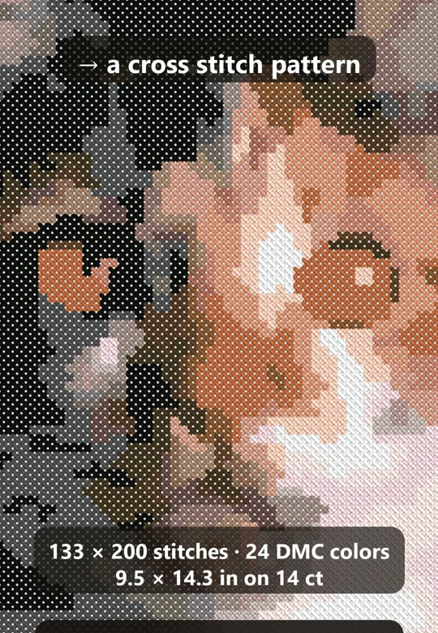

Cross Stitch Portrait: What Size and How Many Colors?
Before you chart a photo, two numbers decide everything: the size in stitches and the number of floss colors. Here are the tables to choose both — finished size on 14, 16 and 18 count, how long it takes, and how many colors suit each subject.


Finished size by fabric count
Finished size = stitches ÷ fabric count. 14 count Aida is the usual choice; 16 and 18 count make the same pattern smaller and finer.
| Stitches | 14 count | 16 count | 18 count |
|---|---|---|---|
| 60 × 75 | 4.3 × 5.4 in (11 × 14 cm) | 3.8 × 4.7 in (10 × 12 cm) | 3.3 × 4.2 in (8 × 11 cm) |
| 80 × 100 | 5.7 × 7.1 in (15 × 18 cm) | 5.0 × 6.2 in (13 × 16 cm) | 4.4 × 5.6 in (11 × 14 cm) |
| 100 × 133 | 7.1 × 9.5 in (18 × 24 cm) | 6.2 × 8.3 in (16 × 21 cm) | 5.6 × 7.4 in (14 × 19 cm) |
| 133 × 200 | 9.5 × 14.3 in (24 × 36 cm) | 8.3 × 12.5 in (21 × 32 cm) | 7.4 × 11.1 in (19 × 28 cm) |
| 150 × 200 | 10.7 × 14.3 in (27 × 36 cm) | 9.4 × 12.5 in (24 × 32 cm) | 8.3 × 11.1 in (21 × 28 cm) |
How long it takes
At a comfortable 150–250 full stitches an hour (it varies a lot with confetti and color changes):
| Stitches | Total stitches | Time |
|---|---|---|
| 60 × 75 | 4,500 | 18–30 hours |
| 80 × 100 | 8,000 | 32–53 hours |
| 100 × 133 | 13,300 | 53–89 hours |
| 133 × 200 | 26,600 | 106–177 hours |
| 150 × 200 | 30,000 | 120–200 hours |
If you need several gifts by a date, go smaller: four 60 × 75 ornaments take about as long as one 133 × 150 portrait.
How many colors
| Subject | DMC colors | Why |
|---|---|---|
| Small ornament, 60 × 75 | 12–18 | keep the shape and main colors; fine shading is lost at this size anyway |
| Pet portrait, 100–150 stitches wide | 20–30 | enough for soft fur and eye highlights |
| Black or white pets | 14–22 | a few greys or creams do the work; more colors give confetti |
| Landscape, people | 25–40 | skin tones and sky gradients need more steps |
Fewer colors mean fewer skeins, fewer thread changes and fewer lone stitches. If a color appears in only a handful of cells, merge it into its neighbour.
How much floss
One DMC skein covers about 1,500–1,800 full stitches on 14 count with two strands; on 18 count, a little more. Add one spare skein of the main colors.
Get Nitki on Google Play